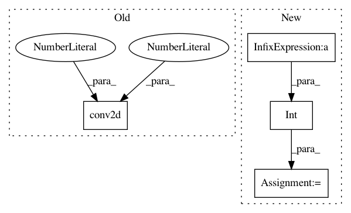

3b7bb4e8caee69567bd83046f9a7370bd3081935,shared/gan.py,,discriminator_fast_densenet,#Any#Any#,372
Before Change
result = batch_norm(config["batch_size"], name="d_expand_bn2a")(result)
result = activation(result)
result = conv2d(result, result.get_shape()[3], name="d_id", k_w=1, k_h=1, d_h=1, d_w=1)
filter_size_w = int(result.get_shape()[1])
filter_size_h = int(result.get_shape()[2])
After Change
filter_size_w = int(result.get_shape()[1])
filter_size_h = int(result.get_shape()[2])
while filter_size_h > 1:
result = dense_block(result, k, activation, batch_size, "transition", "d_layers_transition_"+str(i+10))
filter_size_w = int(result.get_shape()[1])
filter_size_h = int(result.get_shape()[2])
print("densenet size", result)
i+=1
filter_size_w = int(result.get_shape()[1])
filter_size_h = int(result.get_shape()[2])
filter = [1,filter_size_w,filter_size_h,1]
stride = [1,filter_size_w,filter_size_h,1]
result = tf.nn.avg_pool(result, ksize=filter, strides=stride, padding="SAME")
In pattern: SUPERPATTERN
Frequency: 3
Non-data size: 4
Instances
Project Name: HyperGAN/HyperGAN
Commit Name: 3b7bb4e8caee69567bd83046f9a7370bd3081935
Time: 2016-10-19
Author: martyn@255bits.com
File Name: shared/gan.py
Class Name:
Method Name: discriminator_fast_densenet
Project Name: taehoonlee/tensornets
Commit Name: 159070cc35a4484d3546c03f2a3e12454bb3551b
Time: 2020-01-23
Author: me@taehoonlee.com
File Name: tensornets/densenets.py
Class Name:
Method Name: transition
Project Name: HyperGAN/HyperGAN
Commit Name: e4ee8e989f0ee8138798c290233c1c3ec7d3fb61
Time: 2016-10-29
Author: martyn@255bits.com
File Name: lib/gan.py
Class Name:
Method Name: generator